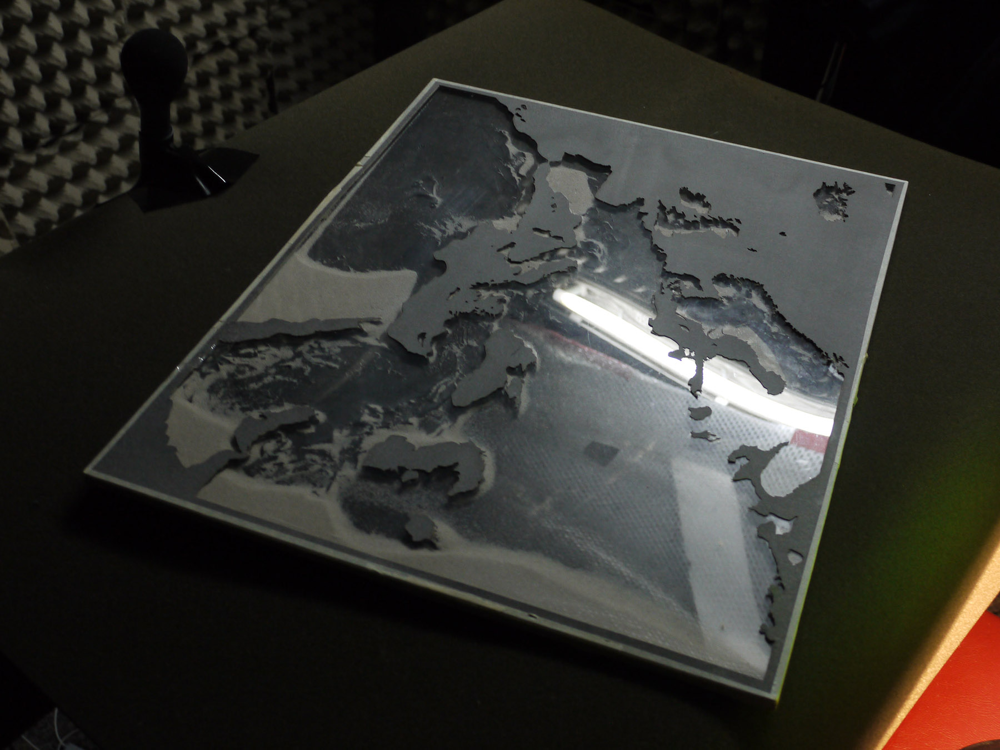
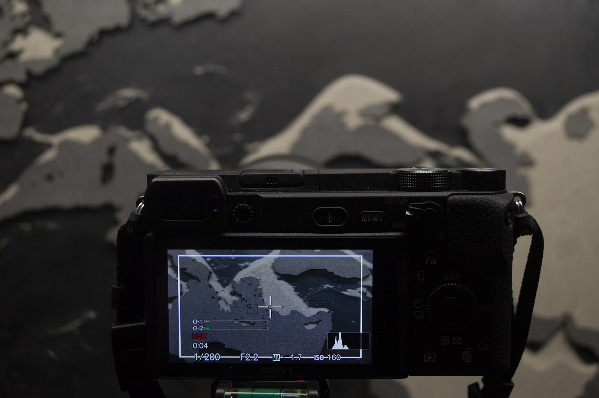
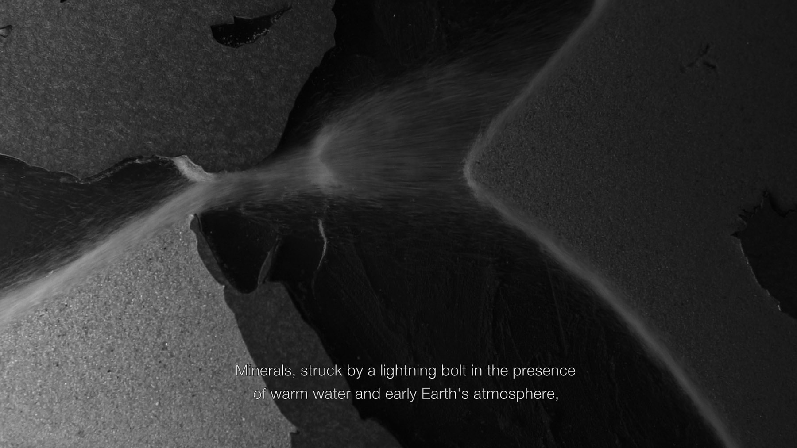
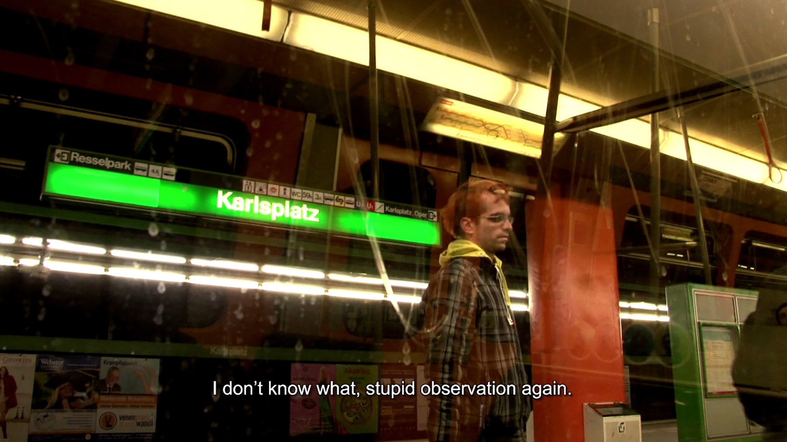
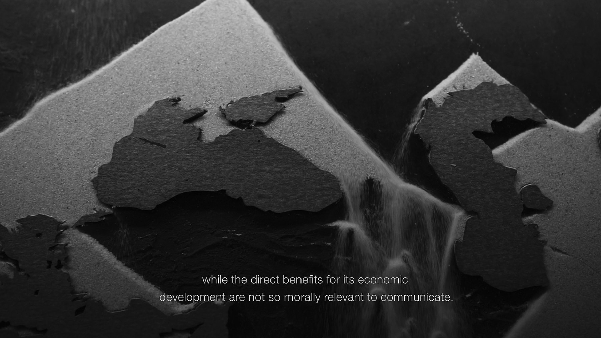
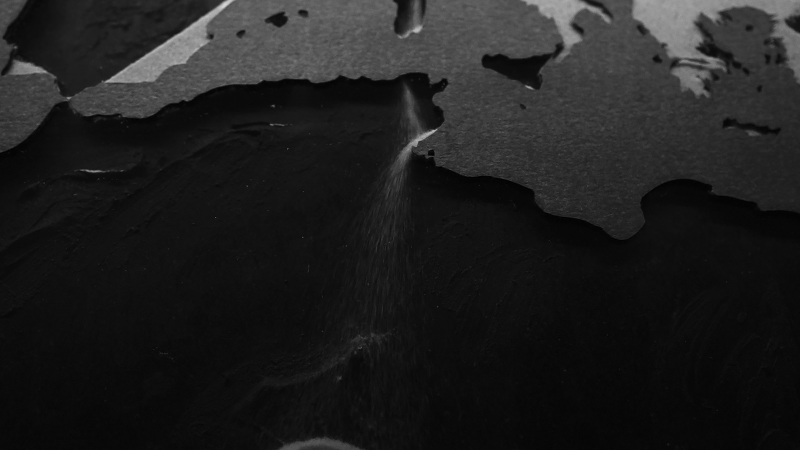
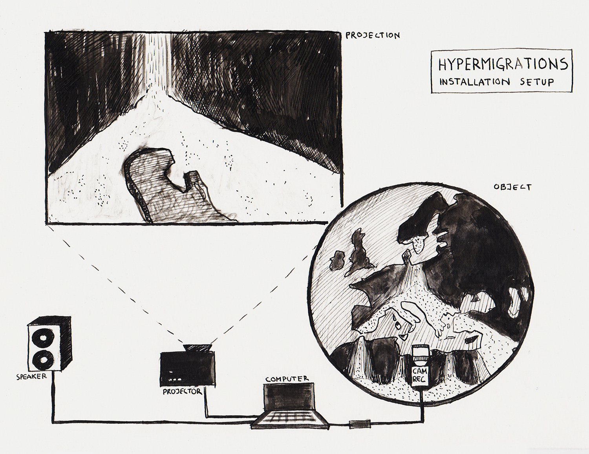

Hectolitre, Brussels - May 2020
IZVAN KARTE/OFF THE MAP: a conversation between Harry Chapman and Mladen Bundalo about his work “Hypermigrations”

The sound recording of the sand map used to film “Hypermigrations”. Photo by Harry Chapman
-
Harry Chapman: So the first question is, what came first, the text or the movement of the sand – the idea with the sand?
Mladen Bundalo: What was the first? It’s a good question. Let me try to remember, to reconstruct… Yes, first I had the idea to cut the map, and to put sand… you know these clocks based on sand passing through the center.
HC: Egg timers.
MB: Yes.
HC: So the map is made as a sort of egg-timer, or hourglass.
MB: Yes. The map is always the map – it’s a space. But the movement, the fluid moving on the map produces a sort of time passing.
HC: But it’s the form of the movement, not the time of it. It’s the shape of the currents.
MB: Both, I guess. The fact that there is a movement, and then the second is the way in which it’s represented. But they’re both working together, otherwise there wouldn’t be the chance to make an animation, if there is no movement behind it, I guess.
HC: Yeah. I guess the… If… Because video cameras record and play back at the same speed, which is how they imitate perception, so we could increase it to 30 frames per second or reduce it to 15 frames per second, and it would appear slower or faster, but our time of viewing it would be the same. And I’m interested in the potential that the movement is real, and that the images are just the index of the movement, because then they behave less like a picture or like a video, and more like a recording or something that’s not… That’s closer to how they would behave independent of perception. They don’t need to be seen if they’re indexes.
MB: No, When I made this map, and when I put the sand inside, to see how this sand moves over the map and what it brings, one of my first observations was that it… Compared to our experience of speed, it moves too fast.
HC: So is the speed to do with how close the camera is to the sand?
MB: Yes, but also… Yes, as it is… Well, not only the camera, but also there is an angle of how you hold the map. If you hold it at 90 degrees, the sand will fall, free fall, and it will be faster. If you make an angle, you’re looking at the map not directly overhead, then the sand will roll down in a slower manner.
HC: So less sand falls. Because I guess the speed of the sand is always the same, but it’s just how much…
MB: Not always, because if it rolls down the slope, it will slow the speed.
HC: Okay. And you said it was too fast?
MB: It was too fast when it was 90 degrees. So theoretically for a camera, it was easier to record – like a straightforward right angle, in terms of making focusing easier and so on, it’s better. But when you angle the plate in front of the camera, it’s… Most of it runs out of focus, you need really to decide where you will focus the camera. And then many times if the angle is too low, the sand won’t even roll down. You need to first stimulate it by giving it a little tap or something like that.
HC: But am I right in thinking that the speed is constant throughout the whole video? Or is it faster or slower?
MB: No, it’s not. The slow motion is constant, because I record 100 frames per second, and I slow it down four times.
HC: Okay.
MB: So what you see on the image is four times slower.
HC: Okay. That would explain why it’s so smooth.

The filming setup. Photo by Mladen Bundalo
-
MB: It’s strange, but for me also my idea was to leave it as it is, but when I saw it free falling, it was… You could not relate to this image. It was too sudden, too disturbing, everything was too quick. And when I made it four times slower, then somehow you were giving enough time to vision in terms of experience, to approach the image and it worked better. Now I don’t know the real process of why it’s like that, but in this particular case, I felt it was a way to do it.
HC: This attachment to the natural… The real speed of the falling, is a bit precious, because of course the sand is not really falling, is it, it’s in all directions – the map pretends some sort of recognizable orientation, I guess in order to be recognized as a map…
Which is maybe its function. But the sand moves in different directions.
MB: Yes. But there is one trick, which is that there is only one lamp, and the lamp is always on top, over the map.
HC: Okay.
MB: And the way that the map always stays orientated towards the north. Yes, the map always… As we agree to show maps. Is it that when the sand is falling from West to East, I had to also rotate the camera 90 degrees, to film with the angle. And then in editing, I rotate everything 180 degrees.
HC: Sure. And did you move the light?
MB: Never. So what there is, there is one fixed relation, the sand is always coming from the direction of light.
HC: From the top down.
MB: Yes, falling down, and the light always above.
HC: But the way you specify it as a particular relation, implies that maybe it would be an opportunity for a trick. If the light was always fixed in relation to the orientation of the map, not to the movement of the sand, the unnatural or biased movement would run counter to expectations.
MB: That’s possible.
HC: Not to do with construction, but just to do with how we receive images.
MB: This is possible.
HC: But I don’t know what it would be.
MB: But this is a good question. This is only an experiment, I have never done it before. And I was not sure what results I would get.
HC: It’s strange to me that the movement seems natural. I didn’t suspect that it had been slowed down.
MB: Me neither.
HC: It seems to retain its consistency independent of speed – perhaps it’s to do with texture.
MB: I don’t know. You know there is this notion that time is passing… When you’re watching a screen, or a film, that you don’t have experience of time – time is passing more quickly or more slowly; it depends on what you see on the screen, it slows or speeds up your feeling of time. Maybe it’s related to this, you know; we accept that once we sit to watch something that the notion of time will fluctuate.
HC: It’s possible that it’s to do with the… I mean we wouldn’t know otherwise, would we - than in the reception of the images. But I guess my point was that its role within the construction interests me, that it’s monadic - you know, you can divide it up as much as you like but every piece is the same as the whole.
MB: Yes - the hologram effect.
HC: It’s like Kerouac said – it’s like toothpaste. It’s already whole.
MB: There is no sense dividing it. You get nothing new. It’s like the cloud, or the wave, or everything basically which is based on a holistic understanding.
HC: I don’t know enough about… Waves seem to me different maybe, because they have a scale or a… I don’t know.
MB: But you know you cannot divide a wave. One wave, it has its frequency, its amplitude, and it goes at the speed of light. What you can do, you can just limit its extension; so if you cut it in half, but you won’t divide it, it will always stay the same wave, with the same frequency and same amplitude.
HC: But this idea of whether we can divide something or not is based on how we approach it.
MB: Yes. There is the French mathematician who worked on the theory of fractals, Benoit Mandelbrot. And the problem of measuring. You know, how long the border of the UK is.
HC: So the idea for the movement came first …
MB: I also had in my mind with regard to the text, the idea to write an essay which would reflect… Which would give some holistic understanding of human migration and movement, in a larger perspective of time, but I had no idea how, why and when.
HC: By larger perspective of time, because it goes back thousands of years?

Video still, “Hypermigrations”, 2020
-
MB: 45,000 years, minimum. What we know, of the humans living today in Europe - some groups before that, also modern humans, but who disappeared, who didn’t survive. Also if you don’t count the fact that almost 4% of each of us is made up of genes coming from Neanderthals, and they were living also much from before, in Europe. But at least these 45,000 years; the period of time since once major group split into three different groups, and one decided to head to Europe. And the direct ancestors of this group still live in Europe. That’s why it was important for thinking of migrations on the continent of Europe - to think in this 45,000 years.
HC: There’s some question for me about scale of enquiry. If we were to study any period, it wouldn’t be so broad - it’s only because of the necessities of a summary or of a survey that the scale of the material becomes in some ways absurd; that it can take in so much. It’s a sort of perverse experiment in narrative, because although it’s possible to summarize all of the information and provide it, I guess the question I can’t avoid having is about how the narrative is functioning - you know, if someone makes a very wide-ranging statement, it always somehow implies the person they’re addressing it to.
MB: Exactly. At least in my case this is completely auto-ethnographic.
HC: Auto-ethnographic?
MB: Yes. I mean there is always… It always comes from my own way of…
HC: Background?
MB: Background, but also the way of synthesizing the information.
HC: So it’s more like a presentation of your own research, or your own summary.
MB: Somehow. Like all of the information, the content of this work, it comes from values… My life activities - not only artistic research, information - you know, it really comes from a life, and my interest for movement, for migrations, for interpretations and how it is used in politics, how it is being polarized in society, how it is used to construct an identity and so on and so on. But it’s a… There is a lot of, how to say, different particles, and forms and shapes of information there. What I tried to do here is to synthesize them all. So I take information from archeology, from politics, from daily news, from conflicts, from art, from science, from genetic research, and try to blend it all with my own proper, how to say…
HC: Subjectivity.
MB: Yes, with my own subjectivity. To use this all to determine some new holistic understanding of what is going on.
HC: But is - and I’m being a bit provocative - but is that not very similar to the way in which these identity formations are produced.
MB: No, because the big difference - where I see a big difference - is actually the spectral range.
HC: What do you mean by spectral range?
MB: Identity is always being constructed on a very narrow range of reality. So if you imagine the whole of reality has an infinite amount of… It’s like a big spectrum of frequencies. So the frequency range by which things such as national identity are constructed, is very narrow. You know, you have the idea of right to territory, and association to some very narrow idea of history. Everything is basically very narrow. What this work… That’s actually where art has more advantage than some disciplines, because it’s trying to synthesize a much wider spectrum of reality into some… To compress all of this basically, into something that can be… An expressive object at the end, or experience or whatsoever, you know.
HC: I still feel like there’s a sort of irony in the reduction…
MB: Of course. But you need to accept the risk.
HC: It seems to be very ideological, or very… The information that the video presents to me is more as a construction, I like to… I need to think about its components. But certainly the text, because it seems like a form of intervention, I guess then doesn’t… It doesn’t get over this extreme breadth.
MB: Of course, it cannot. You know, 45,000 years is 45,000 years.
HC: Okay. So it’s more to take up the challenge of how to begin to talk about such a span.
MB: Exactly, because you know, if you ask me, I don’t have a personal necessity to do it, but the problem is that many politics - and I mean many other things which affect our everyday life - is exactly based on this kind of reduction. And it’s done in a really small… And it’s not only that, but it’s done in a narrow frequency range. You know, how do you explain the fact that for example discussion about migration in Europe today is so polarized. That basically everything coming in between saying yes or no, doesn’t really get into the media and public… It doesn’t interest public opinion. There must be a third position - a third view.
HC: I feel like maybe that question is useful with regards to thinking about what you want the video to do. You know, is it a sort of intervention in this discourse, in this public sphere - or imagined public sphere, or questioned public sphere - the video is a kind of performative intervention in order to do something to this debate that you think will produce more complexity?
MB: Yes, I mean I think my very modest contribution to what I think about the theme.
HC: So how does this idea that it’s an intervention relate to what you were saying about using your own position to enunciate it? How is it at the same time both trying to act in a way, in a deliberate way, to broaden debate or to question, and at the same time to question itself? These two things seem opposed.
MB: They attract, in a way - there is a tension; there is something in between. Some charge, let’s say.
HC: Okay. There’s an activity between…
MB: Exactly.
HC: But that doesn’t mean it’s necessarily free of this contradiction.
MB: Yeah, but if you consider the content of the text, you will understand that there is one strong position reiterated regarding the position of the Balkans within the European continent - a position I am culturally directly related to, as someone who was born and grew up there. And at one moment migrated or moved from there. And even more, it is related to the image of the Balkans in, let’s say, modern Europe - and how it has been interpreted, and why, and so on.
HC: I understand that. I like the map as an object for the same reason, which is that it’s here - it doesn’t need to explain any more than the fact that…
MB: It’s also possible.
HC: This highly generic thing that has been made - so it’s materially unique - but it is the sort of… As an object, it is a paradox, between these highly generic narrative forms and their specific realization, which is in some ways your position.
MB: Yes, this is a good question. I cannot tell you - myself, I cannot give you a direct answer; maybe it’s part of my character or personality. Some people who are really close to me, they have said that really there is this sort of polarity in the work which shifts quickly, from one side to another - for example switching in between, let’s say, opposite poles of being analytic or being poetic or…
HC: Or just highly general and highly personal, at the same time.
MB: Exactly, exactly.
HC: It’s quite perverse in a way.
MB: In a way.

Video still, “How is in Vienna”, 2012
-
HC: So in your Vienna videos, the speech is determined by the length of the metro line - the duration of the line from whichever terminal station to the other terminal. So that’s almost an arbitrary demarcation - which was quite long in some instances. And then to structure your own improvised monologue around this arbitrary designation, already seems to me to be that perversity - the two things are incompatible, but you kind of maintain some relation between them, as a sort of material.
MB: Yes. It’s very performative. It comes from… an effort to blend contemplation and action, which are again opposed poles.
HC: But in the text, you’re still sort of claiming to speak as yourself.
MB: It’s me, but I think there is some sort of resistance towards the narrative itself.
HC: Okay.
MB: I’m afraid I hate the idea that narrative can become single, how to say…
HC: Unified?
MB: Or to have a clear characteristic… There is really something which disturbs me in this idea, that you can say okay, this is one type of narrative or…
HC: But in some ways this idea of a unified narrative is just a projection to dismiss - it doesn’t exist. I don’t think there is a unified narrative. Writing in some way allows you this distance with regards to judgement or with regards to thought - and that’s the position occupied by someone writing or someone reading the text. So there’s already this sort of distancing built into the very idea of relating narrative as text, or a sort of doubt.
MB: It can be destructive, of course. It depends how much you are paying attention to it, and how much the idea of being aware of, how to say, the checking points in a narrative - they overtake the idea of narrative. You cannot… If you start sharing your thoughts, and every two seconds you start questioning, the narrative can become a slave of its own form.
HC: In terms of identification?
MB: In terms of self-interpretation. You know, sometimes we just fall into one single type of thoughts, and it can go for hours like that, you know. You don’t question yourself, you just think you know…
HC: Do you require these performative instances in order to write a text like this? Or would you write text without it forming material for a video or…
MB: I guess it can exist independently. I wrote the text without any kind of editing, so it was just a text and then I added it to the image.
HC: But there’s something - I mean maybe this is my bias - but I like, with the video and the Vienna videos, and the drawings, the hand-drawn currency…
MB: Yes.
HC: There’s some escape from this, to me, dichotomy between general and personal, because the thing, the visual material or the object material, has its own content. So it kind of generalises the intention in a way. You could intend something, and that intention could also be self-doubting - although actually with regards to the sand in this video, it’s quite specific, and quite refined even - so the doubt is kind of displaced, and is not so demonstrative.
It has something to do with communication perhaps, but the practical activity of making something, like this video with the sand falling and certain lighting conditions, with the cut map, has a sort of facility for freeing yourself of this doubt, or displacing the doubt into a different material situation, where it’s given more space.
I mean it’s a false problem in a way. The text doesn’t exist without the video.
MB: You know, one of my doubts about that - I could only go with image and… But I have a serious problem with that, because it becomes… It has this potential to be experienced as something… That my intention was to show something beautiful. You have the sand, slow motion, falling over the map. For me always, when you make something public, it’s necessary to predict a little bit what a general reaction might be. Not completely, but just to ensure that there is… That the information that I’m willing to attach to it, has this capacity to be understood in a proper way.
HC: But maybe this is useful with regards to this public question, because in some ways what you’re saying is that it’s necessary to add this other dimension to this object so that it’s not misunderstood with regards to a public situation. But I guess my position is that the notion of a general public presentation is a bit of a myth…
MB: Of course, of course.
HC: And that everything dependent on how it’s presented - even the way it’s presented to you on the video screen - contains a form of intelligibility that is already adequate. And that things that might be kitsch or overly simple, have this possibility of being understood on their own terms. It’s not a question of value judgement, it’s always only a question of understanding how something is made, and on what terms it can be understood basically.
MB: I know.
HC: I don’t think that anything presented to other people is presented because of its exception or singular quality, because that varies, and everyone is dependent on their own knowledge and experience. It’s more presented just because we have no other… There is no other way to do anything - there is nothing outside of presentation.
MB: It’s only the moment at which it is accessible to other people.
HC: But then this idea that we have to add something - to ruin it a bit or… Or to make it more or less of something - is the thing I question. Because even though the slow motion sand might be a bit difficult, it would still be something… I don’t know, glossy.
MB: Yes. This is the problem of representation, and aesthetic categories - how it works, the norms and the conventions and…
HC: That’s in a general way. I mean specifically this object, this map or this video.

Video still, “Hypermigrations”, 2020
-
MB: I think one of the reasons why I added a layer of strong text on top of it, is that the function of text there is to make sure the image will not become an aesthetic category, itself, in a way. It’s almost to… The text is a sort of regulatory mechanism. Maybe it’s my personal problem, but I have maybe this feeling of complete freedom or something like that, with the image…
HC: But isn’t that also just a form of legitimacy? The sand by itself would not be legitimate. It would be illegitimate because it would be, for you, a too direct presentation of this gratuitous gesture of making an image. But the narrative, although we can say this actively detracts from the image and this makes it less spectacular, and therefore more reasonable - actually its function is really just to legitimise the image as well.
MB: Yes, I have a fear of people saying that my work is beautiful, or of putting it in an aesthetic category.
HC: I guess I don’t really… I suppose what interests me is this doubt you have that the thing you have made, or might make, or be about to make, conforms to some idea you have of popular imagery.
MB: Yes, of course.
HC: Or commercial imagery.
MB: Probably.
HC: And a strategy for mitigating this doubt is to add this text, or to have this text as well.
MB: Basically I put it in a system - that there is no single entity operating in a work, but there is an antagonism between several elements which are somehow self-regulating each other. So for me the work is a holistic, let’s say, feeling or take on my thoughts. It is a small mechanical or biological system, a living cell; it’s not only one thing, there, and that’s it. It’s more like… The experience comes out as a result of the vibration between more elements.
What is important for me, is that they are close to each other, but I can tell you, I spent less time on trying to synchronise it or on dealing with problems like should this sentence start there or arrive with that image, that’s not a problem. It’s always like this, you know, you think in terms of norms operating within industry, what is appropriate and what not. You know, you have these kind of cuts; the voiceover can start, there, there and there - it cannot start there. You have these basic rules.
HC: But these are the kinds of things you’re already playing with, in a way, as soon as you start making decisions.
MB: It’s difficult to say this. For me, it’s really a throwing of dice. I think that there is an infinite number of good solutions, which can be… Everything you throw away, if you throw in a minimally structural way, it’s good, it’s there, it will work. It’s just important that it’s there. It’s a throw.
HC: But isn’t this decision to slow down the sand also predicated on the audience in the same way that someone might be aware of the experience, or the generalised experience, of an audience in watching an edit. That you’re making the same sorts of decisions as soon as you are aware of how the thing behaves as an image.
MB: My idea was just to deal with… I had the disturbing fact that it didn’t feel right to me, and I slowed it down. And when I saw that I didn’t feel that it was slowed down, I said okay. And that’s it.
HC: So that it’s not visible as an effect.
MB: Yes, somehow. It’s a bit reverse engineering, you know, in a way. Any photo you take, it will always have an unnatural gamma or colours; if you want to bring it back you will need to play a little bit with what the camera…
HC: But it’s a good example, because the photograph is already itself - the photograph already reflects its own production by being off-colour or…
MB: I know, but in that sense every amateur photograph is also a professional photograph or…
HC: Sure.
MB: This is playing with aesthetic categories, and your feeling of aesthetic categories. If I’m working in a film industry, I will never stop on just marking all the clips and putting 25% slower, and that’s it. What I will probably do is I’ll go clip by clip, and then put one a 20%, one at 15%, one at 50%, to get the optimum speed for absolutely everything, to make it really smooth, and to play with rhythm, to play with appearance, to play with duration and so on - to really go far in this. That’s how they would make it when constructing experience, you know.
HC: But that’s also the prerogative of the work. It’s a bit like colour grading. It’s necessary insofar as it’s considered a part of the machine - and it’s an effect that’s perceived as lacking if it’s not there.
MB: But this drifts too far from reverse engineering.
HC: By reverse engineering you mean taking the effect and then working out how to make it?
MB: To lower this effect of boosting up emotions or experience - or too much playing with someone’s experience of it. Every film, you know, it first slows down, then it speeds up, then it escalates… Basically it’s driving the experience. Me, I have something really… It terrifies me.
HC: I’m interested in the doubt that you have about it as an image, because of these professional tropes. Not in so much that you’ve prevented yourself in doing these things that you consider a problem, but more in the doubt that you have that the thing might actually be subversive within these tropes.
MB: I guess for me what is important, really the core, the base, the skeleton of whatever you are presenting to someone, is that it has a basic, strong logic behind it. That if it stands like that, it will have a capacity to communicate itself in an easy way. You know, it’s…
HC: But isn’t - again, to be provocative - the existence of the thing is enough legitimacy for me. The making of this map didn’t need to happen, and so it’s enough for me that it has happened. And this is in some ways to go back to this public dimension. It seems within a public situation it would be necessary to account for its existence with regards the interests of the public - television audience, or film audience or… Because that’s the thing that determines the legibility of these objects. But in a sort of general way, I wonder whether all of the things that are made to fit into those expectations are hindered by this need for having a prescribed intention. Whereas the desire to make the thing was quite simple, it becomes a lot of other things once it signs up to these devices… Which aren’t only legitimacy, I mean it’s also a source of information.
MB: Another way to explain this way of communicating, of your experience in work, is to think about this Marshall McLuhan theory of cold and hot mediums; in which a cold medium is like video. Why cold? Because it gives you space to, how to say, build in yourself, your thoughts. And it’s really true, when you listen to video, it doesn’t, so to speak, wrap you around a chair and you cannot… You move freely, you listen, you reflect.
HC: But I feel like - I would argue against this idea - I think it’s specific to what’s being presented by way of these media. It’s not the medium in itself that’s hot or cold…
MB: The content.
HC: For me a specific type of music on a radio…
MB: But for him, it’s not video any more, it becomes music broadcasting, which doesn’t necessarily need to be…
HC: So the question would be displaced onto a discipline specific question of music.
MB: What I understand is that for him there is already a difference between film and TV, even though both are dealing with image. But there is something in between, your body relation toward the way you consume media - it’s different when you attend a concert in a concert hall, and if you listen to the same sound on a video. Because when you listen to it on a video, your body is moving freely around and you don’t feel any moment obliged to stop or to behave properly, like in a concert.

“Hypermigrations”, installation setup by Mladen Bundalo
-
HC: But to come back to the video, in some ways it’s not a question, because the video is already functioning within these parameters. So it’s not hot or cold, it’s not making an argument about media in general, it just already is the synthetic product of a medium, and we can analyse it or…
MB: I don’t know. For me I found something really connecting the feeling of watching films and videos exhibited in a physical space and then going to see it in a projection room. It’s a different feeling. When I enter the completely dark projection room, I already start feeling uncomfortable - some big expectations will come, you know. I think it always has an impact. In a gallery space, when there is a TV showing something like that, immediately, that I can choose the angle and the speed…
HC: You can walk around it, you mean?
MB: Yes - it puts me in a superior position. At least you’re not a slave of a work itself, you can co-create experience. You can decide if you want to come closer, or if you can step away. But for me it’s a really fascinating question. You know, a computer is really powerful because when you look at something on a computer, everything which is on your screen is in your personal space. I think the best way to see it is on a computer. But I think it’s important to have headphones, and that you know that you have the next 18 minutes, you can watch it. Just to have a single block of experience that you can then manipulate with, or do whatever you want; it’s already short, 15 minutes, and it’s already a lot - 45,000 years - so if it’s divided into a lot of pieces then you really end up with nothing.
****
HC: What was your intention?
MB: So my intention was to make an installation, basically. That the map is a round object, with the sand inside. And there is a handle, so you can come and rotate it, and lock it in any given position and let the sand fall; whilst behind there is a text, to be listened to or read – this I still haven’t decided - but this was the basis. The reason why I filmed it, first it was to see how it will look at little bit visually, and to see whether it makes sense for the text to be heard, or if it’s too invasive and it makes more sense to remain as a text. But I kind of… I was surprised it already kind of matched itself, and I decided to make this first part as a video. I’m very thankful to Pierre-Louis Casssou, a film producer and colleague at Hectolitre, for help around video production, but also for wonderful intellectual exchange about the work.

“Hypermigrations”, installation setup by Mladen Bundalo
-
Photos: Mladen Bundalo and Harry Chapman